画面に情報を出そう
🎯 この章でできるようになること
- UI レイヤーで、画面に情報を出しつづけられる
- シーン変数で、体力や倒した数を数えられる
- 変数の値に合わせて、バーの長さや文字を変えられる
- ゲームオーバーで最初からやりなおせる
4-1. この章で作るしくみ
倒した数を1ふやす（追加）
倒した数の文字を変える
4-2. 変数とUIレイヤーを用意しよう
「Game Scene」のタブで、ステージの外の何もないところをクリックします。
左の「シーン変数」の右の、四角から矢印が出たマークを押します。
「変数を追加」で次の2つを作り、「適用」を押します。
PlayerHealth（プレイヤーの体力）… 数値、値は100Kills（倒した数）… 数値、値は0
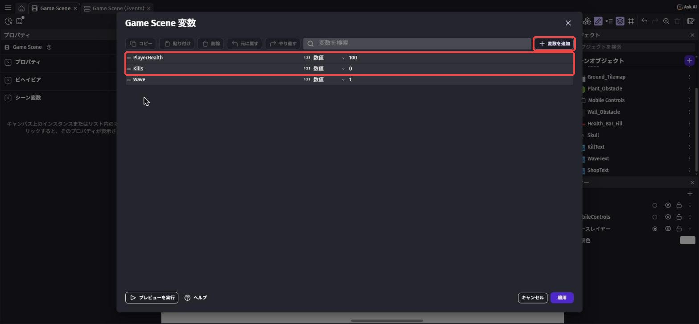
第2章のゴブリンの Health（オブジェクト変数）は1体ずつ別々でしたが、プレイヤーの体力や倒した数は1つあればいいのでシーン変数にします。
右上のレイヤーのマーク（紙が重なったマーク）を押すと、右下に「レイヤー」が出ます。
「＋」を押して新しいレイヤーを作り、名前を UI にして Enter。
UI の右の丸いボタンを押して、これから置くものが UI レイヤーに入るようにします。
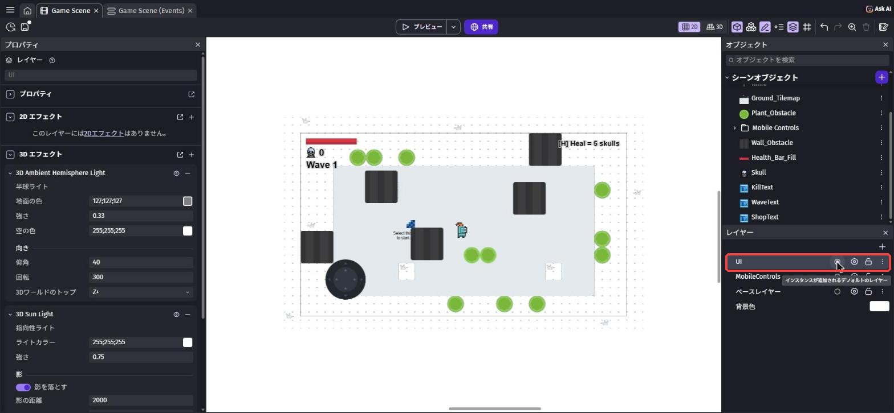
UI レイヤーはカメラが動いても画面の同じ場所にとどまるので、体力バーや点数を出すのにぴったりです。
4-3. 体力バーとドクロを置こう
「＋」からアセットストアを開き、health bar で検索します。
「Health Bar Fill」（作者: Pixel-boy、CC0）を選んで「シーンに追加」。
これは「タイルスプライト」（タイル状にくり返す画像）なので、横の長さを自由に変えられます。
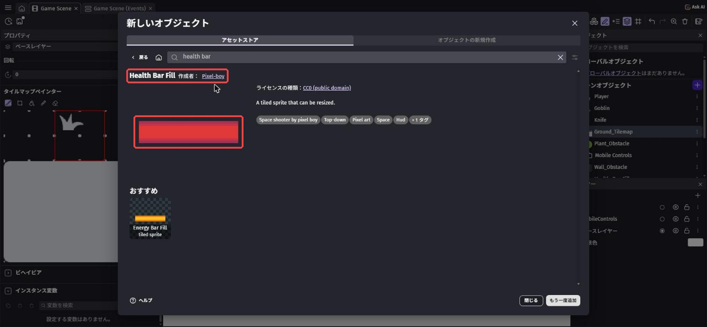
次に skull で検索して、「Skull」（作者: Alex's Assets、CC0）を追加します。
倒した数のマークに使います。
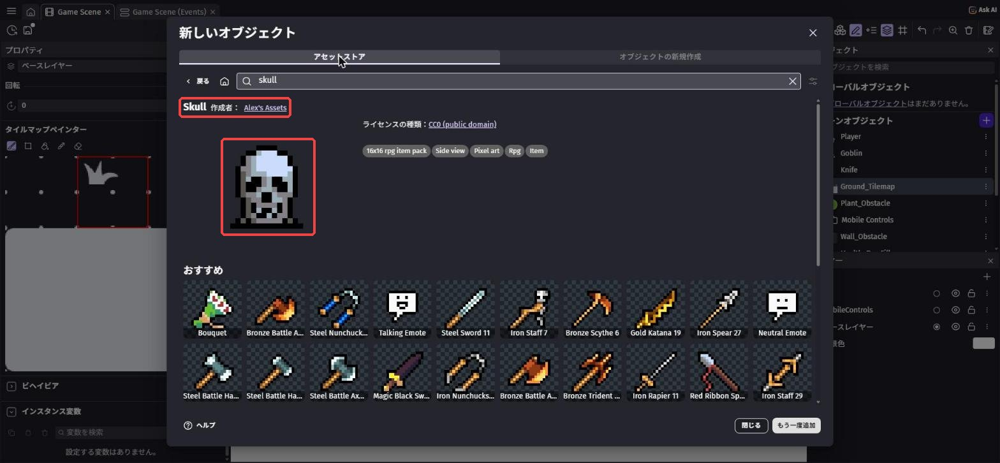
「＋」→「オブジェクトの新規作成」→ テキスト で検索 →「テキスト」を選びます。
オブジェクト名 を KillText、サイズ を 36、「太字」にチェック。
最初に表示するテキスト（最初の文字）は 0。
「輪郭」の 有効 にチェックして、太さ（ふちの太さ）を 4 にして「適用」。
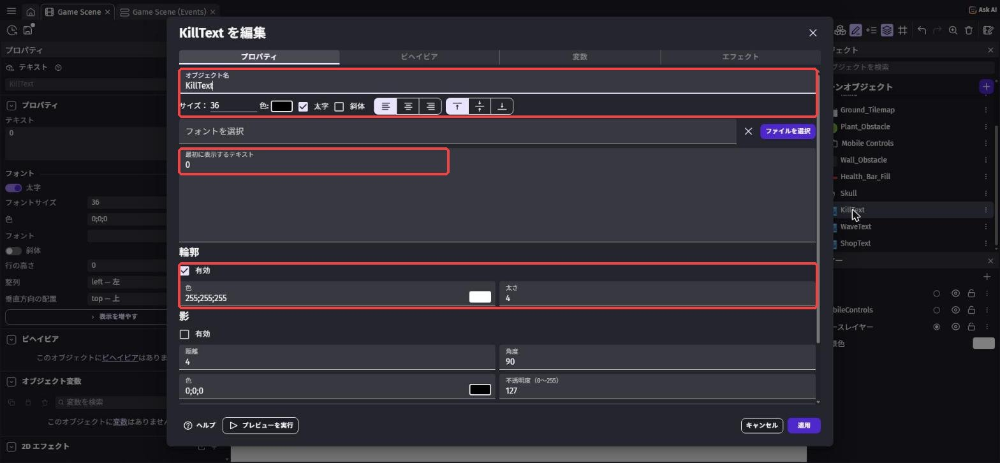
3つを画面に置いて、左の数字で位置と大きさを決めます。
置いたものをクリックすると、左に X・Y・W（幅）・H（高さ）が出ます。
Health_Bar_Fill… X20、Y20、W200、H24（W と H の右の鎖のマークを押して、たて横の比率を自由にしてから入れる）Skull… X20、Y56、W40KillText… X70、Y52
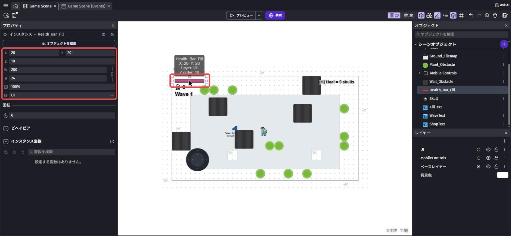
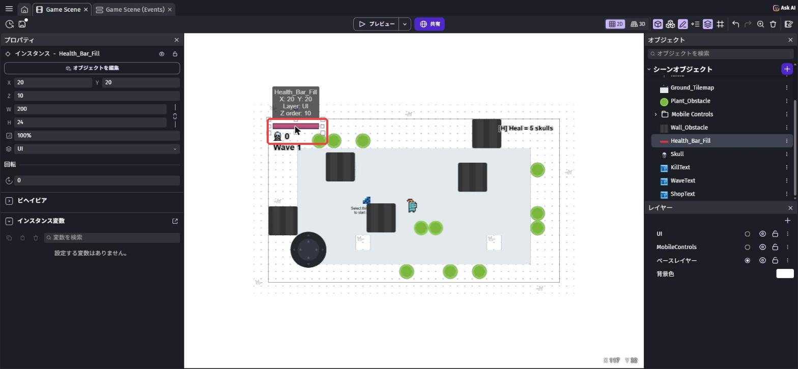
置き終わったら、レイヤー の「ベースレイヤー」の丸いボタンを押して、もとにもどしておこう。
もどさないと、このあと置く壁やゴブリンも UI レイヤーに入ってしまいます。
4-4. ダメージとゲームオーバーを作ろう
イベントシートの Enemy グループで、「Goblin の 変数 Health ≤ 0」のイベントにアクションを足します。
変数の値を変更 で検索 →「変数の値を変更」、変数 は Kills、演算子 は「＋（足す）」、値 は 1。
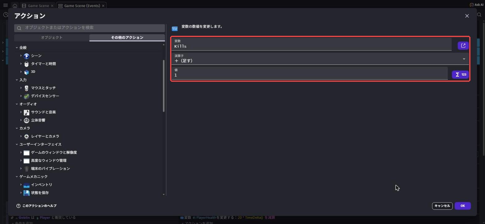
いちばん下に新しいイベントを作ります。
条件は「衝突」で Goblin と Player。
アクションは「変数の値を変更」で PlayerHealth を「ー（引く）」、値 は下の式。
20 * TimeDelta()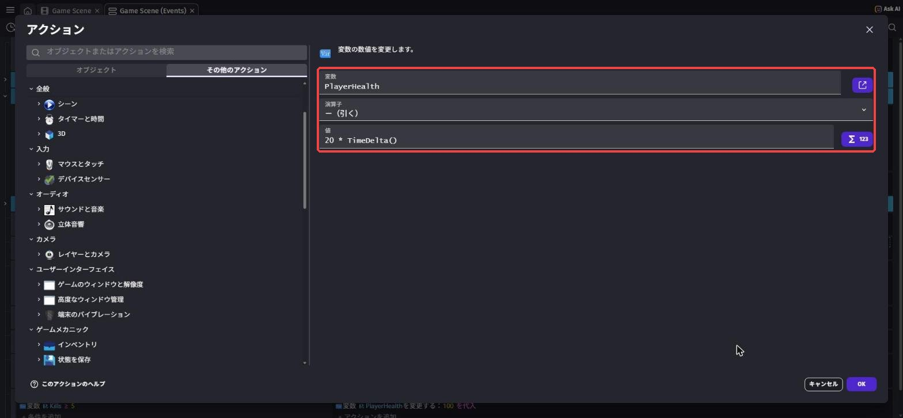
20 × TimeDelta() を毎回引くと、ちょうど「1秒で20へる」になります。
PCの速さがちがっても、へる速さは同じになります。
条件のないイベントを作り、アクションを2つ入れます。
幅で検索 →「幅」、Health_Bar_FillをPlayerHealth * 2（体力100なら幅200）- 左の一覧で
KillTextを選び、いちばん上の「テキスト」でToString(Kills)
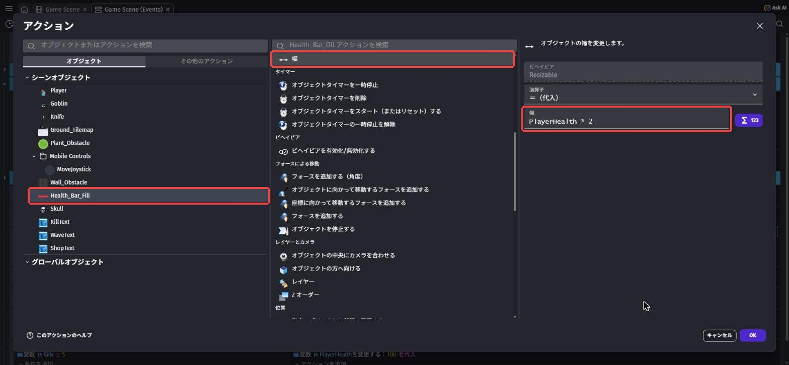
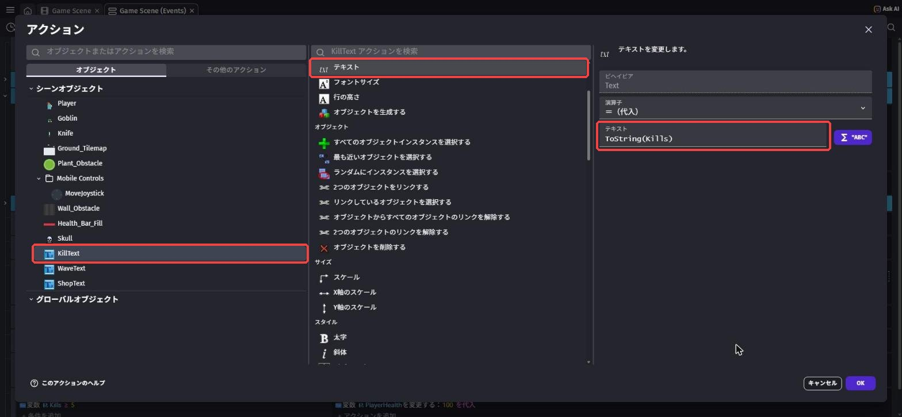
ToString(Kills)（赤枠）Kills は数なので、文字のオブジェクトに出すときは ToString で文字にします。
新しいイベントの条件に「変数の値」で PlayerHealth、テスト記号 は「≦（以下）」、値は 0。
アクションは シーンを変更 で検索 →「シーンを変更する」、一覧から「Game Scene」。
同じシーンに変えると、最初からやりなおしになります。
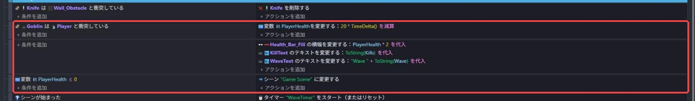
ゴブリンにさわられると、左上の赤いバーがどんどん短くなります。
ゴブリンを倒すと、ドクロの横の数字がふえます。
バーがなくなると、ゲームが最初から始まります。
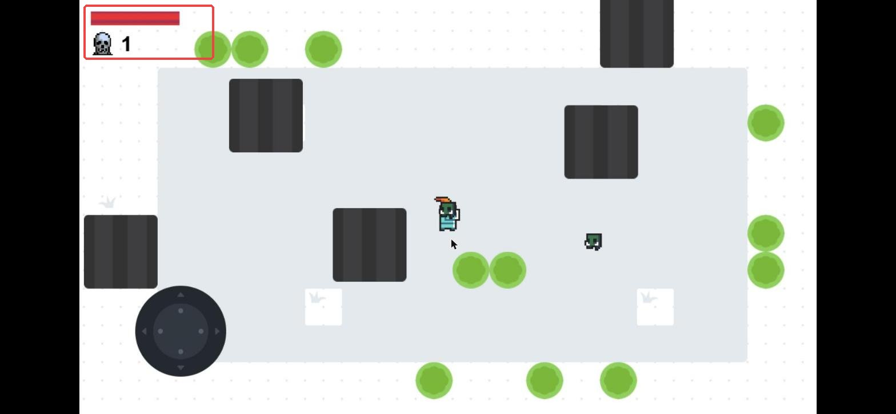
💪 やってみよう
ダメージの強さ（20）を変えてみよう。
体力バーの下に、黒い「わく」の画像を置くと、もっとそれっぽくなるよ。
ヒント
わくは、アセットストアで health bar と検索すると見つかります。
わくを UI レイヤーに置いて、Health_Bar_Fill より下（Z order を小さく）にしよう。
4-5. 🚨 つまずきポイント集
体力バーや数字がプレイヤーといっしょに動いてしまう
原因: UI レイヤーではなく ベースレイヤー に置いた。
直し方: 置いたものをクリックして、左の レイヤー が「UI」になっているか確かめよう。
すぐにゲームオーバーになる
原因: 値 を 20 だけにして、TimeDelta() をかけていない。
直し方: 20 * TimeDelta() になっているか確かめよう。
体力バーが長くならない・短くならない
原因: 幅 のアクションを KillText など、別のオブジェクトに入れた。
直し方: オブジェクト が Health_Bar_Fill になっているか確かめよう。
4-6. ✅ チェックリスト
全部チェックできたら第4章クリア！
🎉 次回は、だんだん強くなるウェーブと、回復できるショップを作るよ。